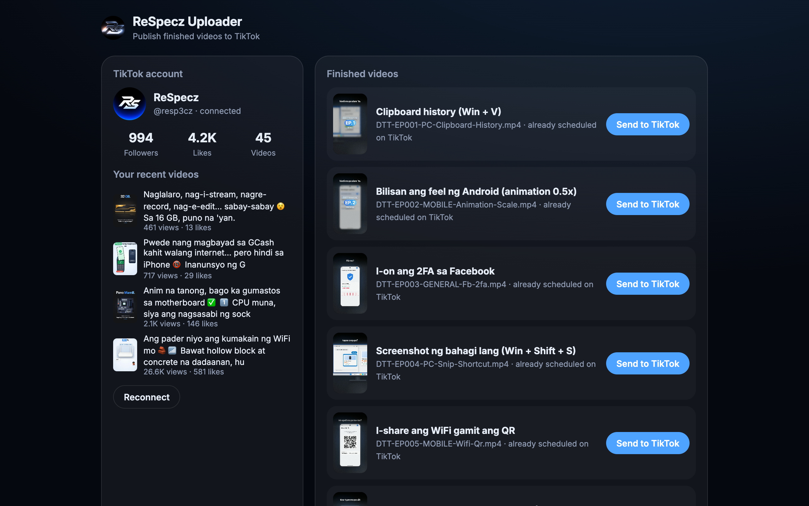
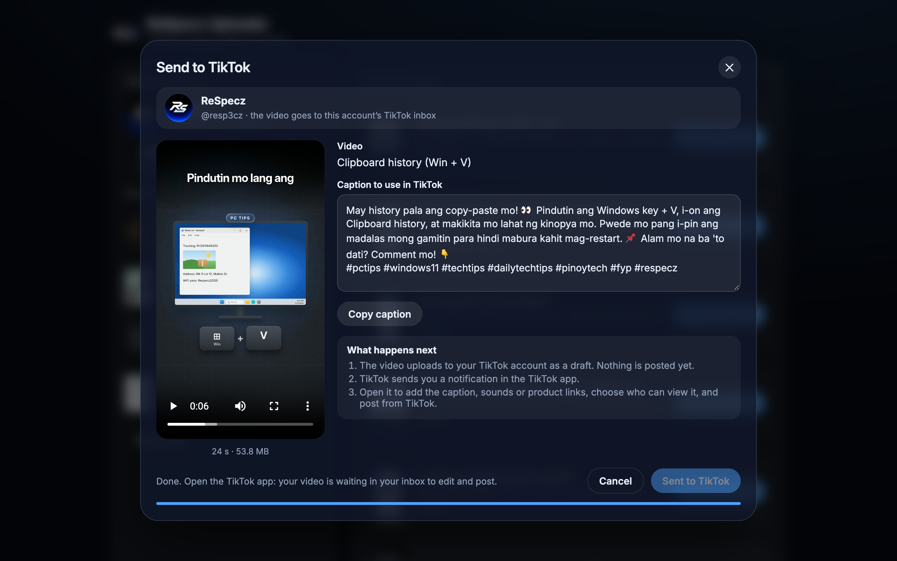

ReSpecz Uploader for macOS
ReSpecz Uploader runs on the creator's Mac as a local app and opens in the browser at http://localhost:4747. It sends finished videos to the creator's TikTok drafts with the official Content Posting API after the creator signs in with TikTok.
| Version | 1.0 (November 2026) |
|---|---|
| Platform | macOS, runs with Node.js |
| Who uses it | The ReSpecz creator, to send videos to their own TikTok account @resp3cz |
| Price | Free, no ads, no in-app purchases |
The app is not sold or listed in an app store. It is the ReSpecz creator's own publishing tool. Questions: message @resp3cz.

How the creator uses it
- Start ReSpecz Uploader on the Mac. It opens at
http://localhost:4747. - Click Connect TikTok and sign in. The app asks for: the basic profile (to show which account is connected), permission to upload the videos the creator chooses as drafts, and read access to the creator's own stats and video list.
- Pick a finished video and click Send to TikTok, check the preview, copy the caption, and press Send to TikTok drafts.
- The app uploads the video and shows TikTok's status until the draft is in the TikTok inbox.
- The creator opens the TikTok app, adds the caption, chooses who can view it, and posts.
Screens


Disconnecting
Remove ReSpecz Uploader in the TikTok app under Settings and privacy → Security and permissions → Apps and services. The app then can no longer upload or read anything.